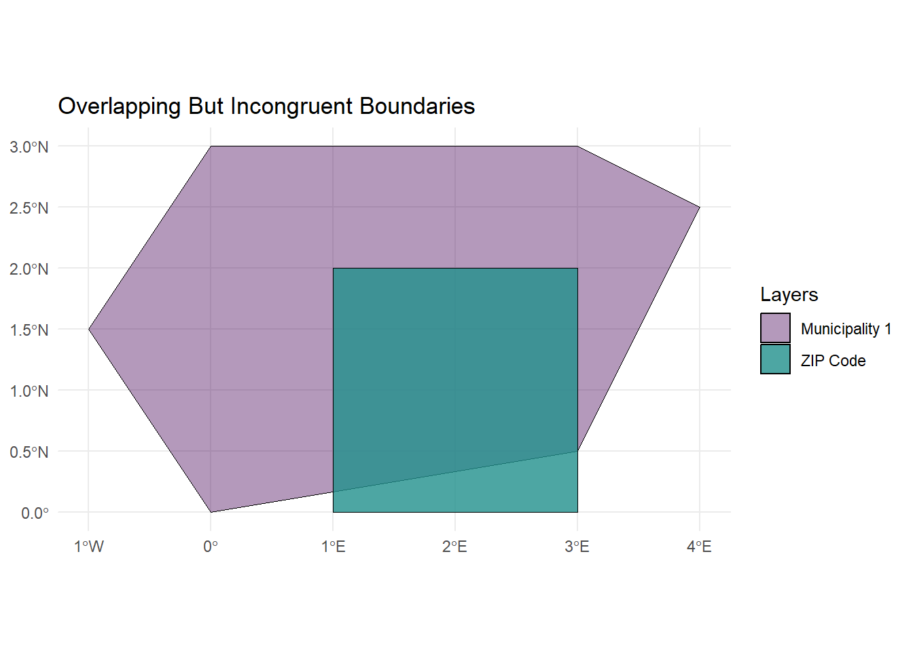
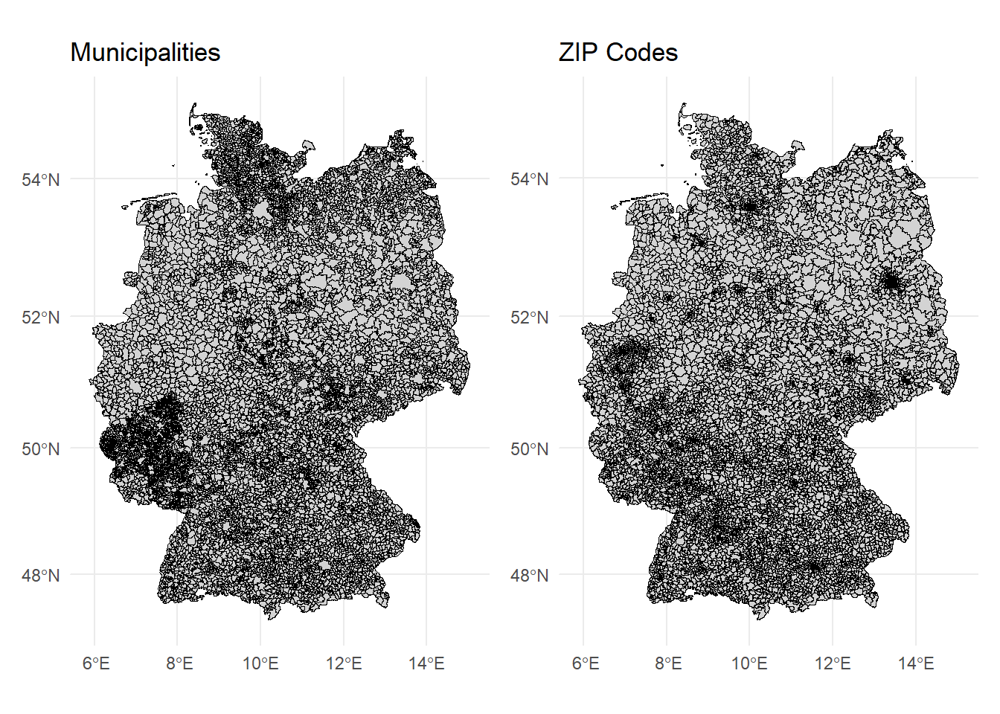
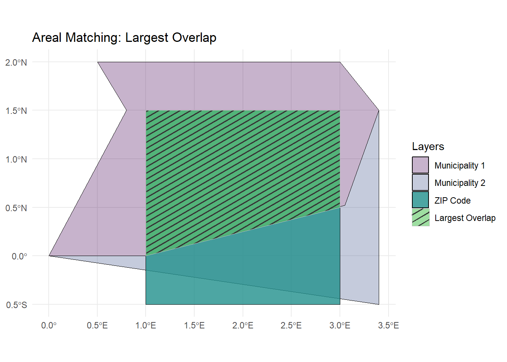
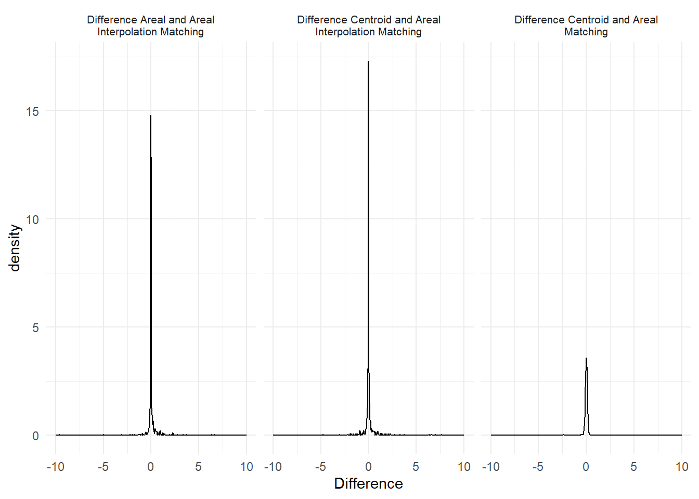

(Assessment of) Geospatial Linking of Incongruent Units
At a glance
Introduction
Data integration of social indicators from surveys with geospatial context variables has rapidly progressed. Applications in the social sciences are manifold, covering issues such as conflict and migration, political participation, environmental attitudes, and inequality. Geospatial approaches allow researchers to introduce new perspectives in explaining societal processes and emphasize the local aspects of globally relevant questions.
As an example, this tool application addresses the discourse on the rural-urban divide, which has received considerable attention in recent years. Rural areas can serve as breeding grounds for political discontent because citizens’ perceptions of their living environment may foster a sense of neglect, resource deprivation, and lack of societal respect. Consequently, citizens may become more susceptible to far-right narratives, which could explain the rise of populist and far-right sentiments in rural areas. Therefore, one central research question is: Is living in a less densely populated area, such as a rural place, associated with far-right party preferences? To answer this question, it is necessary to link survey data with information about the respondents’ living environment.
The linking process is crucial to answer this research question but is prone to certain pitfalls, such as incongruent geospatial units, e.g. overlapping geospatial units that do not share common border(Qiu, Zhang, and Zhou 2012)https://bookdown.org/robinlovelace/geocompr/spatial-operations.html#ref-qiu_development_2012. In many (online) surveys, respondents can indicate where they live by, for example, entering the ZIP code of their home address. This information allows for the linking of contextual information about the respondents’ living environment like population density to the survey data. However, contextual information is often not available at the ZIP code level. Instead, it refers to administrative units such as municipalities. These two different spatial units are often not congruent, increasing uncertainty in the linking process.
This tool addresses this challenge by highlighting linking techniques that can be used to successfully link the datasets and assessing the uncertainty of the linking process.
Data Prerequisites and Description
To replicate this tool, researchers need the following:
- Survey data that includes an identifier for the target areal units where respondents reside and which they wish to match
- The geometries of the target areal units
- The geometries of the areal units that includes the context information they are interested in
For this tool application, we rely on three data sources: (synthetic) survey data including self-reported ZIP codes, the geographies of German ZIP code areas, and the geographies of German municipalities, including attributes of interests, in this case population density.
We base our analysis example on survey data from the German Longitudinal Election Study (GLES). The GLES Tracking consists of short cross-sectional online surveys (CAWI) conducted three times a year. Each cross-sectional sample includes approximately 1,000 respondents. For this analysis, we create a synthetic data set based on the GLES Tracking November 2023, T56. Respondents were asked to indicate their approval of the German radical right party AfD on a scale from 1 (“I don’t think highly of this party at all”) to 11 (“I think very highly of this party”) (variable t14h). At the end of the questionnaire, they were also asked to enter the 5-digit ZIP code of their primary residence (variable t71).
Important
Due to data protection regulations, ZIP codes cannot be published in the Scientific Use Files of the survey data but only accessed through the Secure Data Center at GESIS. For this tool application, we provide simulated data that reproduces the real correlation of the GLES data without allowing conclusions to be drawn about the place of residence and the interviewee.
The two additional data sources provide the necessary geographies of ZIP code areas and municipalities and their corresponding attributes. We rely on the Open Data portal ArcGIS Hub to access the geometries of the German ZIP code areas and municipalities. Data can be downloaded directly as a shapefile or GeoPackage file. We work with a geospatial data type called vector data, which is organized similarly to any other data table: each row represents a geometric object (e.g., a ZIP code area or a municipality), and each column holds an attribute (e.g., population density). For detailed information on handling geospatial data and using the package sf, you can refer to our course “Introduction to Geospatial Techniques for Social Scientists in R”.
Tool Functions To Assess the Spatial Linking Process
This tool application provides replicable code to guide the user through the linking process and assess their linking strategy. The tutorial highlights the following steps:
Centroid linkage: This technique involves linking data based on the central point (centroid) of a geographic area. For example, the centroid of a ZIP code area is linked to the municipality in which the centroid is located.
Areal matching: This method matches entire areas to one another, such as linking ZIP code areas to municipalities based on the largest overlapping area.
Areal interpolation: This technique redistributes data from one set of geographic units to another. The basic approach, area weighted spatial interpolation, takes into account the size of the areal overlap and assigns the value of the overlapping area in proportion to the overlap.
Overall Assessment of Linking Techniques: Evaluates the differences, effectiveness, and accuracy of the different linking techniques to determine the best method for integrating the survey and geospatial data at hand.
Influence of Linking Technique on Research Question: Analyzes how the choice of linking technique affects the outcomes and interpretations of the research question, ensuring that the conclusions drawn are robust and reliable.
Getting started
Packages
There are several packages out there that allow geospatial data handling in R. Since we are working mainly with vector data, we heavily rely on the package sf. The packages dplyr, ggplot2, and tibble are used for data manipulation and visualization.
# Load necessary packages ----
library(dplyr) # For data manipulation
library(ggplot2) # For data visualization
library(sf) # For handling spatial (geometric) data
library(tibble) # For creating and managing tibbles (data frames)Geospatial Data
In Germany, the 5-character zip code areas often do not align with municipal boundaries, leading to both overlap and incongruence. This mismatch can be more pronounced in rural areas, where larger zip code regions may encompass multiple small municipalities. In contrast, urban areas tend to have several distinct zip codes that fall within a single municipality. For example, the capital Berlin, as a German ‘city-state’, is one municipality with 190 zip codes.
When selecting and loading the geospatial data, we always check for three sources of errors: - Consistent (projected) coordinate reference systems. In our case, both shapefiles are projected in WGS 84 (EPSG: 3857). - Timeliness of administrative boundaries and territorial reforms. For example, we use the 2022 municipality boundaries and the 2023 zip code areas. - Existence, column names, and format of identifiers and variables of interest. For instance, we require the zip code and municipality code to be in character format in our data frame.
# Load zip code data ----
zip_codes <-
# Load spatial data from GeoPackage file
sf::st_read("./data-raw/PLZ_Gebiete_7155512659375659703.gpkg") |>
# Select only relevant columns: zip code and population
dplyr::select(zip_code = plz, inhabitants_zip_code = einwohner)Reading layer `OSM_PLZ' from data source
`C:\Users\stroppan\Documents\zipmatching\data-raw\PLZ_Gebiete_7155512659375659703.gpkg'
using driver `GPKG'
Simple feature collection with 8170 features and 4 fields
Geometry type: MULTIPOLYGON
Dimension: XY
Bounding box: xmin: 653035.2 ymin: 5986275 xmax: 1674460 ymax: 7373264
Projected CRS: WGS 84 / Pseudo-Mercator# Load municipality data ----
municipalities <-
# Load spatial data from GeoPackage file
sf::st_read("./data-raw/Gemeindegrenzen_2022__mit_Einwohnerzahl_4398740898366155627.gpkg") |>
# Select AGS (municipality code) and population columns
dplyr::select(ags = AGS, inhabitants_municipality = EWZ)Reading layer `GEM_ew_22' from data source
`C:\Users\stroppan\Documents\zipmatching\data-raw\Gemeindegrenzen_2022__mit_Einwohnerzahl_4398740898366155627.gpkg'
using driver `GPKG'
Simple feature collection with 10990 features and 17 fields
Geometry type: MULTIPOLYGON
Dimension: XY
Bounding box: xmin: 653028 ymin: 5986277 xmax: 1674447 ymax: 7373282
Projected CRS: WGS 84 / Pseudo-MercatorWe also advice to always plot the data for a visual inspection of the prjection and completeness of the geospatial information.

Survey Data
Due to data protection regulations, we cannot use real-world survey but we base our tool application on simulated data that were created on the basis of the GLES Tracking November 2023, T56. To prepare the simulated data, we clean the original survey data to retain only valid zip codes and then link the data with geospatial data using centroid and areal matching techniques, followed by area-weighted interpolation for population and area estimates. Finally, we calculate correlations between the variable of interest, “afd_rating”, and from the geospatial data derived population densities. In a next step, we generate random ZIP codes, introducing some invalid entries to mimic the real-world data. We repeat the linking process and then simulate the dependent variable based on the original correlations to derive with the simulated data. To replicate the creation of the simulate survey data, we provide the R-Script here.
survey <- readRDS("./data-raw/simulated_survey_data.rds")Inspecting data
Before linking survey data, it is crucial to inspect the zip codes provided by respondents, especially when participants entered their zip codes independently. The self-reported nature of data entry can lead to several issues like refusal to respond or typographical errors, which can result in invalid or missing zip codes. The provided code categorizes the self-reported zip codes into three statuses: “Non Response”, “Invalid ZIP Code” (For instance, zip codes that are not five characters long or that do not exist in the predefined list of valid zip codes), and “Valid”. By utilizing this categorization, researchers can identify and address potential data quality issues before data integration.
# Create a new column 'status' to categorize the zip codes
survey <- survey |>
dplyr::mutate(
# Use case_when to classify each zip_code into different statuses
status = dplyr::case_when(
# Condition 1: If zip_code is NA, classify as "1 Non Response"
is.na(zip_code) ~ "1 Non Response",
# Condition 2: If zip_code does not have exactly 5 characters,
# classify as "2 Invalid ZIP Code"
nchar(zip_code) != 5 ~ "2 Invalid ZIP Code",
# Condition 3: If zip_code is not found in the list of valid zip codes,
# classify as "2 Invalid ZIP Code"
!zip_code %in% zip_codes$zip_code ~ "2 Invalid ZIP Code",
# Condition 4: If zip_code is found in the list of valid zip codes,
# classify as "3 Valid"
zip_code %in% zip_codes$zip_code ~ "3 Valid"
)
)
# Create a summary table to count the occurrences of each status
summary_table <- survey |>
dplyr::group_by(status) |> # Group the data by the 'status' column
dplyr::summarise(
# Count the number of occurrences for each status
count = dplyr::n(),
# Calculate the frequency
freq = (dplyr::n() / nrow(survey)) * 100
) |>
# Convert the result into a tibble for easier viewing and manipulation
tibble::as_tibble()
print(summary_table)# A tibble: 3 × 3
status count freq
<chr> <int> <dbl>
1 1 Non Response 63 6.3
2 2 Invalid ZIP Code 17 1.7
3 3 Valid 920 92 In this case, 6.3% of respondents did not answer the zip code question, and 1.7% provided an invalid zip code. What we do not check here is whether respondents entered their correct zip code. Depending on the data at hand, it might be possible to verify whether other self-reported data, such as the federal state, or data from other sources align with this information.
For the ongoing linking process, we exclude all observations that did not enter a zip code or entered an invalid one, working instead with a subsample of all valid zip codes in the survey. Since we will use more spatial techniques in the following analysis, we rely on this reduced spatial data frame.
# Create a reduced dataset based on the valid zip codes from the survey data
zip_codes_valid <-
survey |>
# Filter the survey data to include only rows with a valid zip code status
dplyr::filter(status == "3 Valid") |>
# Perform a left join with the zip_codes dataset on the 'zip_code' column
dplyr::left_join(zip_codes, ., by = "zip_code") |>
# Convert the resulting data frame to a simple features (sf)
sf::st_as_sf()
Important
If you want to create a complete matching list between all zip codes and all municipalities in Germany, you can also use the complete zip code data set. However, it might take a while to create this data set and run the spatial joins.
Matching methods
Simulate respondents place of living
We’re sampling 1,000 points within each valid zip code area to later assess the accuracy of our linking techniques. By simulating 1,000 hypothetical living locations for respondents who reported living in a specific zip code area, we can evaluate whether our method accurately aligns each sampled point with the correct municipality. This approach allows us to identify any discrepancies or inaccuracies in the linking process and compare the three linking methods.
# Sample points within zip code areas ----
# Randomly sample points within each zip code area. Note: This can take a long
# time due to the number of points sampled.
points_in_zip_codes <-
zip_codes_valid |>
# Sample 1000 points per area
sf::st_sample(size = c(1000, 1000), progress = TRUE, exact = FALSE) |>
# Convert sampled points to an sf object
sf::st_as_sf() |>
# Spatially join sampled points with zip code data
sf::st_join(zip_codes) |>
# Arrange points by zip code for easier viewing
dplyr::arrange(zip_code) |>
# Assign unique IDs to each sampled point
dplyr::mutate(id = 1:dplyr::n()) |>
# Select only the ID and zip code columns
dplyr::select(id, zip_code)
# Join sampled points with municipality inhabitants data ----
# Spatially join the sampled points data with municipality data to match each
# point with actual inhabitants data from municipalities
points_with_real_inhabitants_municipality <-
points_in_zip_codes |>
# Join points with municipality data
sf::st_join(municipalities) |>
# Rename population column for clarity
dplyr::rename(real_inhabitants_municipality = inhabitants_municipality)Centroid matching
This method uses the centroid (center point) of each zip code area to find the corresponding municipality. It assumes that the center point accurately represents the zip code’s location in terms of municipality boundaries.

One benefit of this approach is its simplicity and efficiency, allowing for quick linking process. However, a drawback is that it may overlook important local variations, as the centroid may not accurately reflect the distribution of residents or land use within the zip code area, nor does it account for the actual overlap or shape of the units. To do the linking process, we need to calculate centroids for each zip code and use the sf::st_join function to identify in which municipality each centroid is located.
# Centroid linking ----
centroid_matched <-
zip_codes_valid |>
# Calculate the centroid for each zip code area
sf::st_point_on_surface() |>
# Spatially join centroids with municipality data
sf::st_join(municipalities) |>
# Select relevant columns
dplyr::select(zip_code, inhabitants_zip_code, inhabitants_municipality) |>
# Remove any duplicate rows
dplyr::distinct() |>
# Arrange by zip code for easy viewing
dplyr::arrange(zip_code)Areal matching
This method assigns each zip code area to the municipality in which the majority of its area lies.
# Function to create a realistic polygon for Municipality 1
create_municipality_polygon <- function() {
coords <- matrix(c(
0, 0, # Bottom-left
1, 0,
3, 0.5, # Bottom-right
3.4, 1.5, # Middle-right
3, 2, # Top-right
0.5, 2, # Top-left
0.8, 1.5, # Middle-left
0, 0 # Closing the polygon
), ncol = 2, byrow = TRUE)
st_polygon(list(coords)) |>
st_sfc(crs = 4326) |>
st_sf()
}
# Create Municipality 1
municipality1 <- create_municipality_polygon()
municipality1$id <- "Municipality 1"
create_municipality_polygon <- function() {
coords <- matrix(c(
0, 0, # Bottom-left
1,0,
3, 0.5, # Bottom-right
3.4, 1.5, # Middle-right
3.4,-0.5,
0,0
), ncol = 2, byrow = TRUE)
st_polygon(list(coords)) |>
st_sfc(crs = 4326) |>
st_sf()
}
municipality2 <- create_municipality_polygon()
municipality2$id <- "Municipality 2"
# Function to create a realistic polygon for Postal Code Area 1
create_zip_code_polygon1 <- function() {
coords <- matrix(c(
1, -0.5, # Bottom-left
3, -0.5, # Bottom-right
3, 1.5, # Top-right
1, 1.5, # Top-left
1, -0.5 # Closing the polygon
), ncol = 2, byrow = TRUE)
st_polygon(list(coords)) |>
st_sfc(crs = 4326) |>
st_sf()
}
# Create Postal Code Area 1
zip_code1 <- create_zip_code_polygon1()
zip_code1$id <- "ZIP Code"
# Overlapping Area
# Function to create a realistic polygon for Postal Code Area 1
create_overlap_polygon <- function() {
coords <- matrix(c(
1, 0, # Bottom-left
3, 0.5, # Bottom-right
3, 1.5, # Top-right
1, 1.5, # Top-left
1, 0 # Closing the polygon
), ncol = 2, byrow = TRUE)
st_polygon(list(coords)) |>
st_sfc(crs = 4326) |>
st_sf()
}
overlap <- create_overlap_polygon()
overlap$id <- "Largest Areal Overlap"
# Plot the selected municipality and postal code areas with overlap highlighted
ggplot() +
geom_sf(data = municipality1, aes(fill = id), alpha = 0.5, color = "black") +
geom_sf(data = municipality2, aes(fill = id), alpha = 0.5, color = "black") +
geom_sf(data = zip_code1, aes(fill = id), alpha = 0.5, color = "blue") +
geom_sf(data = overlap, aes(fill = id), alpha = 0.8, color = "red") +
scale_fill_brewer(palette = "Set3") +
labs(title = "Areal Matching: Largest Overlap",
fill = "Layers") +
theme_minimal() +
theme(legend.position = "right")
The sf::st_join function identifies which municipality overlaps with each zip code area. The largest = TRUE argument indicates that if a zip code overlaps with multiple municipalities, it will only keep the municipality with the largest overlapping area.
# Areal matching method ----
areal_matched <-
zip_codes_valid |>
# Spatial join using the largest overlap municipality for each zip code area
sf::st_join(municipalities, left = TRUE, largest = TRUE) |>
# Select relevant columns
dplyr::select(zip_code, inhabitants_zip_code, inhabitants_municipality) |>
# Remove duplicates to ensure each zip code matches one municipality
dplyr::distinct() |>
# Sort by zip code
dplyr::arrange(zip_code)Areal interpolation
This method uses areal interpolation to distribute municipality inhabitants data proportionally across overlapping ZIP code areas. It estimates the inhabitants for each ZIP code based on the proportion of its area that overlaps with each municipality by:
library(sf)
library(ggplot2)
library(dplyr)
# Function to create a realistic polygon for Municipality 1
create_municipality_polygon1 <- function() {
coords <- matrix(c(
0, 0, # Bottom-left
1, 0,
3, 0.5, # Bottom-right
3.4, 1.5, # Middle-right
3, 2.5, # Top-right
0.5, 2.5, # Top-left
0.8, 1.5, # Middle-left
0, 0 # Closing the polygon
), ncol = 2, byrow = TRUE)
st_polygon(list(coords)) |>
st_sfc(crs = 4326) |>
st_sf()
}
# Create Municipality 1
municipality1 <- create_municipality_polygon1()
municipality1$id <- "Municipality 1"
# Function to create a realistic polygon for Municipality 2
create_municipality_polygon2 <- function() {
coords <- matrix(c(
0, 0, # Bottom-left
1, 0,
3, 0.5, # Bottom-right
3.4, 1.5, # Middle-right
3.4, -1, # Bottom-right extension
0, 0 # Closing the polygon
), ncol = 2, byrow = TRUE)
st_polygon(list(coords)) |>
st_sfc(crs = 4326) |>
st_sf()
}
# Create Municipality 2
municipality2 <- create_municipality_polygon2()
municipality2$id <- "Municipality 2"
# Function to create a realistic polygon for Postal Code Area
create_zip_code_polygon <- function() {
coords <- matrix(c(
1, -0.5, # Bottom-left
3, -0.5, # Bottom-right
3, 1.5, # Top-right
1, 1.5, # Top-left
1, -0.5 # Closing the polygon
), ncol = 2, byrow = TRUE)
st_polygon(list(coords)) |>
st_sfc(crs = 4326) |>
st_sf()
}
# Create Postal Code Area
zip_code <- create_zip_code_polygon()
zip_code$id <- "ZIP Code"
# Create geometries for each municipality's share in the interpolation area
interpolated_municipality1 <- st_intersection(zip_code, municipality1) # Share from Municipality 1
interpolated_municipality1$id <- "Share from Municipality 1"
interpolated_municipality2 <- st_intersection(zip_code, municipality2) # Share from Municipality 2
interpolated_municipality2$id <- "Share from Municipality 2"
# Combine the shares into a single data frame
shares_combined <- rbind(interpolated_municipality1, interpolated_municipality2)
# Plot the municipalities and their shares in the zip code area
ggplot() +
geom_sf(data = municipality1, aes(fill = id), alpha = 0.5, color = "black") +
geom_sf(data = municipality2, aes(fill = id), alpha = 0.5, color = "black") +
geom_sf(data = zip_code, aes(fill = id), alpha = 0.5, color = "blue") +
geom_sf(data = shares_combined, aes(fill = id), alpha = 0.7, , color = "red") +
scale_fill_brewer(palette = "Set3") +
labs(title = "Area-weighted spatial interpolation",
fill = "Layers") +
theme_minimal() +
theme(legend.position = "right")
Overlap Calculation: For each zip code area, the function determines how much of its area overlaps with each municipality, as such calculate the intersection of each unit of both areal unit layers.
Proportional Distribution: Once the overlaps are identified, it calculates the proportion of each municipality’s area that overlaps with the zip code area.
Population Estimation: The estimated population for each zip code area is then computed by multiplying the municipality’s population by the overlap proportion. For example, if a municipality has 10,000 inhabitants and 40% of its area overlaps with a particular zip code, then 4,000 inhabitants would be allocated to that zip code area. If multiple municipalities overlap with a zip code area, it sum the estimated populations from each municipality to get the total population for that zip code.
For advanced users, we’d also like to refer to the package areal that builds upon the sfpackage we use here and expands the functions for area weighted interpolations [@Prener].
# Areal interpolation matching method ----
areal_interpolation_matched <-
sf::st_interpolate_aw(
# Use municipality inhabitants data for interpolation
municipalities["inhabitants_municipality"],
# Target zip code areas for the interpolation
zip_codes_valid,
# Set to FALSE as population data is not "extensive" (not purely additive)
extensive = FALSE
) |>
# Combine interpolated results with original zip code data
dplyr::bind_cols(
zip_codes_valid |>
# Drop geometry to avoid duplication issues in final output
sf::st_drop_geometry() |>
# Select only zip code and its inhabitants count
dplyr::select(zip_code, inhabitants_zip_code)
) |>
# Choose relevant columns for output
dplyr::select(zip_code, inhabitants_zip_code, inhabitants_municipality) |>
# Ensure unique rows
dplyr::distinct() |>
# Sort by zip code
dplyr::arrange(zip_code)Evaluating the linking process
Calculate the differences between real and estimated inhabitants
This section calculates how much the estimated number of inhabitants differs from the actual number of inhabitants for each method: Centroid Matching, Areal Matching, and Areal Interpolation Matching.
# 1. Difference with Centroid Matching ----
diff_real_centroid <-
# Perform a left join between the real data and centroid-matched data
dplyr::left_join(
# The real inhabitants data joined to points
points_with_real_inhabitants_municipality,
# Centroid matched data (drop the geometry for non-spatial comparison)
centroid_matched |>
# Drop geometry column, keeping only tabular data
sf::st_drop_geometry()
) |>
# Create new columns for the differences
dplyr::mutate(
# Add a column indicating the type of comparison
`Type` = "Difference with Centroid Matching",
# Calculate the difference in inhabitants
Difference = real_inhabitants_municipality - inhabitants_municipality
)
# 2. Difference with Areal Matching ----
diff_real_areal <-
# Left join between real inhabitants data and areal-matched data
dplyr::left_join(
# The real inhabitants data
points_with_real_inhabitants_municipality,
# Areal matched data (drop geometry for comparison)
areal_matched |>
sf::st_drop_geometry()
) |>
# Create new columns
dplyr::mutate(
# Indicate the type of comparison
`Type` = "Difference with Areal Matching",
# Calculate difference between real and estimated inhabitants
Difference = real_inhabitants_municipality - inhabitants_municipality
)
# 3. Difference with Areal Interpolation Matching ----
diff_real_areal_interpolation <-
# Join real inhabitants data with areal interpolation-matched data
dplyr::left_join(
# The real inhabitants data
points_with_real_inhabitants_municipality,
# Areal interpolation matched data (without geometry)
areal_interpolation_matched |>
sf::st_drop_geometry()
) |>
# Create new columns
dplyr::mutate(
# Indicate the comparison type
`Type` = "Difference with Areal Interpolation Matching",
# Calculate the difference between real and interpolated inhabitants
Difference = real_inhabitants_municipality - inhabitants_municipality
) |>
# Ensure unique rows to avoid duplication
dplyr::distinct()Combine all differences into one data frame for analysis
This section combines the differences calculated for each method (Centroid, Areal, Areal Interpolation) and performs summary statistics to evaluate accuracy and consistency of each method.
differences <-
# Combine rows from all difference data frames into one
dplyr::bind_rows(
# Difference data from Centroid Matching
diff_real_centroid,
# Difference data from Areal Matching
diff_real_areal,
# Difference data from Areal Interpolation Matching
diff_real_areal_interpolation
) |>
# Drop spatial geometry for non-spatial analysis
sf::st_drop_geometry() |>
# Group by matching method type (Centroid, Areal, etc.)
dplyr::group_by(Type) |>
# Add indicators for accuracy evaluation
dplyr::mutate(
# Binary indicator if Difference is exactly 0 (perfect match)
correct = ifelse(Difference == 0, 1, 0),
# Indicator if Difference within ±500 inhabitants
more_or_less_correct = ifelse(Difference > -500 & Difference < 500, 1, 0)
) |>
# Summarize the data for each matching method
dplyr::summarize(
# Median of the Difference column
median = median(Difference, na.rm = TRUE),
# Mean of the Difference column
mean = mean(Difference, na.rm = TRUE),
# Minimum difference
min = min(Difference, na.rm = TRUE),
# Maximum difference
max = max(Difference, na.rm = TRUE),
# Standard deviation of the differences
sd = sd(Difference, na.rm = TRUE),
# Variance of differences divided by 1000 for scaling
var1000 = var(Difference, na.rm = TRUE) / 1000,
# Interquartile range (IQR) of differences
iqr = IQR(Difference, na.rm = TRUE),
# Proportion of exact matches (where Difference = 0)
prop_correct = mean(correct, na.rm = TRUE),
# Proportion of matches within ±500 inhabitants
prop_more_or_less_correct = mean(more_or_less_correct, na.rm = TRUE)
)
# Calculate the differences between inhabitants estimated by Centroid Matching and Areal Matching ----
diff_centroid_areal <-
# Create a new tibble (data frame) to store the differences
tibble::tibble(
# Assign a label for the type of difference calculated
`Type` = "Difference Centroid and Areal Matching",
# Calculate the difference in inhabitants between the two matching methods
Difference = centroid_matched$inhabitants_municipality -
# Subtract Areal Matching inhabitants from Centroid Matching
areal_matched$inhabitants_municipality
)
# Calculate the differences between inhabitants estimated by Centroid Matching and Areal Interpolation Matching ----
diff_centroid_interpolated <-
# Create a new tibble to store the differences
tibble::tibble(
# Label for the difference type
`Type` = "Difference Centroid and Areal Interpolation Matching",
# Calculate the difference for this matching comparison
Difference = centroid_matched$inhabitants_municipality -
# Subtract Areal Interpolation inhabitants from Centroid Matching
areal_interpolation_matched$inhabitants_municipality
)
# Calculate the differences between inhabitants estimated by Areal Matching and Areal Interpolation Matching ----
diff_areal_interpolated <-
# Create a new tibble to store the differences
tibble::tibble(
# Label for the difference type
`Type` = "Difference Areal and Areal Interpolation Matching",
# Calculate the difference in inhabitants between the two methods
Difference = areal_matched$inhabitants_municipality -
# Subtract Areal Interpolation inhabitants from Areal Matching
areal_interpolation_matched$inhabitants_municipality
)Aggregate on Zip Code level
This process calculates the mean difference for each matching method (Centroid, Areal, Areal Interpolation) by zip code, and then determines the method with the smallest absolute mean difference per zip code.
# Aggregate differences at the zip code level ----
diff_real_zip_code_aggregated <-
diff_real_centroid |>
# Group data by zip code
dplyr::group_by(zip_code) |>
# Drop geometry for non-spatial operations
sf::st_drop_geometry() |>
# Summarize by calculating mean difference
dplyr::summarize(
# Mean difference for centroid matching method
mean_difference_centroid = mean(Difference, na.rm = TRUE)
) |>
# Join with the areal matching differences
dplyr::left_join(
diff_real_areal |>
dplyr::group_by(zip_code) |>
sf::st_drop_geometry() |>
dplyr::summarize(
# Mean difference for areal matching method
mean_difference_areal = mean(Difference, na.rm = TRUE)
)
) |>
# Join with the areal interpolation matching differences
dplyr::left_join(
diff_real_areal_interpolation |>
dplyr::group_by(zip_code) |>
sf::st_drop_geometry() |>
dplyr::summarize(
# Mean difference for areal interpolation
mean_difference_areal_interpolation = mean(Difference, na.rm = TRUE)
)
)
# Calculate absolute mean differences ----
diff_real_zip_code_aggregated <-
diff_real_zip_code_aggregated |>
# Create columns for absolute mean differences
dplyr::mutate(
# Absolute value of mean differences (centroid method)
mean_difference_centroid_abs = abs(mean_difference_centroid),
# Absolute mean difference for areal method
mean_difference_areal_abs = abs(mean_difference_areal),
# Absolute mean difference for areal interpolation
mean_difference_areal_interpolation_abs =
abs(mean_difference_areal_interpolation)
)
# Identify the method with the smallest absolute difference per zip code ----
diff_real_zip_code_aggregated <-
diff_real_zip_code_aggregated |>
# Use bind_cols to add the method with minimum difference
dplyr::bind_cols(
# Find column name with minimum absolute difference
min_method = names(diff_real_zip_code_aggregated[-c(1:4)])[
# Inverse to get min absolute values, excluding grouping cols
max.col(-diff_real_zip_code_aggregated[-c(1:4)])
]
) |>
# Adjust cases with ties for consistency
dplyr::mutate(
min_method = ifelse(
# Tie condition check
mean_difference_centroid_abs == mean_difference_areal_interpolation_abs &
mean_difference_centroid_abs == mean_difference_areal_abs,
# Set to "centroid" if all methods tie
"mean_difference_centroid_abs",
min_method
)
) |>
# Remove intermediate absolute difference columns
dplyr::select(-contains("abs"))
# Join with zip code geometry and assign codes for each method ----
diff_real_zip_code_aggregated <-
diff_real_zip_code_aggregated |>
# Join back with zip code spatial data
dplyr::left_join(zip_codes) |>
# Convert back to an sf object for spatial analysis
sf::st_as_sf() |>
# Create a code for each method for easier visualization
dplyr::mutate(
min_method_code = dplyr::case_when(
# Assign code 1 for centroid method
min_method == "mean_difference_centroid_abs" ~ 1,
# Code 2 for areal method
min_method == "mean_difference_areal_abs" ~ 2,
# Code 3 for areal interpolation method
min_method == "mean_difference_areal_interpolation_abs" ~ 3
)
) |>
dplyr::mutate(
difference = dplyr::case_when(
min_method == "mean_difference_centroid_abs" ~ mean_difference_centroid,
min_method == "mean_difference_areal_abs" ~ mean_difference_areal,
min_method == "mean_difference_areal_interpolation_abs" ~
mean_difference_areal_interpolation,
TRUE ~ NA
)
)Visualization
# Create a histogram to visualize the distribution of differences for each matching method ----
difference_histogram <-
# Combine differences from all matching methods into a single data frame
dplyr::bind_rows(
# Centroid method differences
diff_real_centroid,
# Areal method differences
diff_real_areal,
# Areal interpolation method differences
diff_real_areal_interpolation
) |>
# Remove spatial geometry for visualization purposes
sf::st_drop_geometry() |>
# Initialize ggplot with Difference as x-axis variable
ggplot(aes(x = Difference)) +
# Add histogram with 10 bins
geom_histogram(bins = 10) +
# Limit x-axis for a clear view of the distribution
xlim(-2500000, 2500000) +
# Create a separate histogram for each matching method type
facet_wrap(~`Type`)
difference_histogram
# Create density plots to compare scaled differences across matching methods ----
difference_densities <-
# Combine pairwise differences for each matching method
dplyr::bind_rows(
# Centroid and Areal method differences
diff_centroid_areal,
# Centroid and Interpolated method differences
diff_centroid_interpolated,
# Areal and Interpolated method differences
diff_areal_interpolated
) |>
# Group data by matching method type
dplyr::group_by(`Type`) |>
# Scale differences for comparability across methods
dplyr::mutate(Difference = scale(Difference)) |>
# Initialize ggplot with Difference as x-axis variable
ggplot(aes(x = Difference)) +
# Create density plot for distribution visualization
geom_density() +
# Set x-axis limits to focus on main data range
xlim(-10, 10) +
# Separate density plots by type of matching method
facet_wrap(~`Type`)
difference_densities